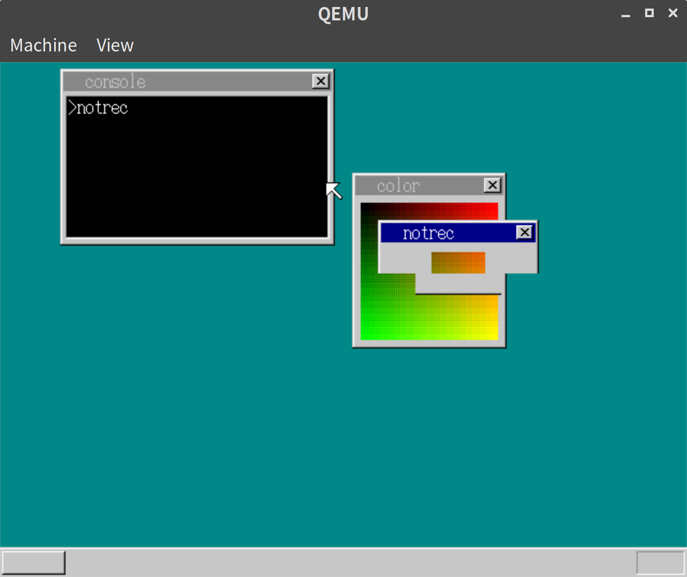
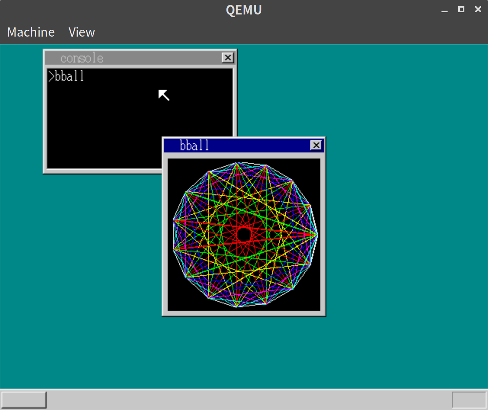
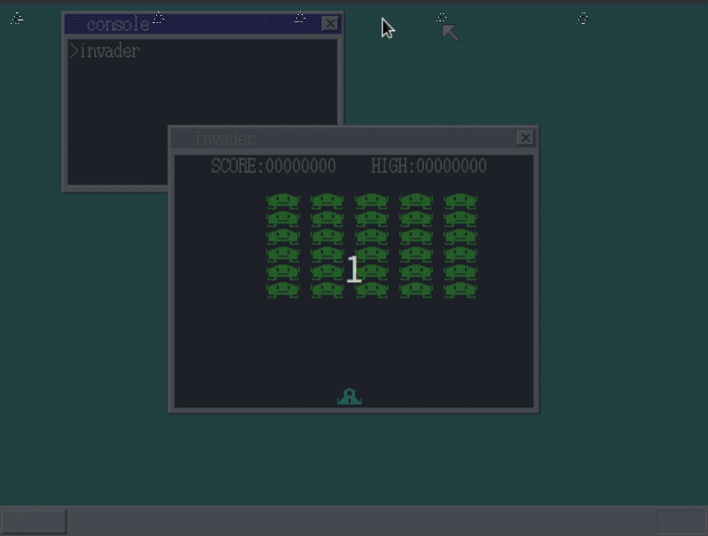
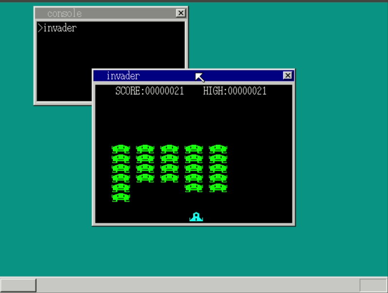

「30日でできる！OS自作入門」をRustで。29日目
Posted on August 20, 2019
「30日でできる！OS自作入門 」のC言語の部分をできるだけRustですすめてみる。今回は29日目の内容。
本ではファイルの圧縮を紹介しているが、独自アルゴリズムの圧縮形式のようで、圧縮自体も必須ではなさそうなので、今回はスキップする。
ここから最後までほぼアプリケーションを作る流れになりそうだ。
非矩形ウィンドウ
透明領域を作ることができるので、以下のようにすれば一部透明のウィンドウを起動できる。
// notrec/strc/lib.rs
#[no_mangle]
#[start]
pub extern "C" fn hrmain() {
let buf: [u8; 150 * 70] = [0; 150 * 70];
let win = unsafe {
_api_openwin(
buf.as_ptr() as usize,
150,
70,
14,
b"notrec".as_ptr() as usize,
)
};
unsafe {
_api_boxfilwin(win, 0, 50, 34, 69, 14);
_api_boxfilwin(win, 115, 50, 149, 69, 14);
_api_boxfilwin(win, 50, 30, 99, 49, 14);
}
loop {
if (unsafe { _api_getkey(1) } == 0x0a) {
break; // Enterならbreak
}
}
end();
}実行結果

bball
線を使った幾何学模様を描く
// bball/src/lib.rs
#[no_mangle]
#[start]
pub extern "C" fn hrmain() {
let buf: [u8; 216 * 237] = [0; 216 * 237];
let points: [(i32, i32); 16] = [
(204, 129),
(195, 90),
(172, 58),
(137, 38),
(98, 34),
(61, 46),
(31, 73),
(15, 110),
(15, 148),
(31, 185),
(61, 212),
(98, 224),
(137, 220),
(172, 200),
(195, 168),
(204, 129),
];
let win = unsafe {
_api_openwin(
buf.as_ptr() as usize,
216,
237,
-1,
b"bball".as_ptr() as usize,
)
};
unsafe {
_api_boxfilwin(win, 8, 29, 207, 228, 0);
}
for i in 0..=14 {
for j in (i + 1)..=15 {
let mut d = j - i;
if d >= 8 {
d = 15 - d;
}
if d != 0 {
unsafe {
_api_linewin(
win,
points[i].0,
points[i].1,
points[j].0,
points[j].1,
(8 - d) as i8,
);
}
}
}
}
loop {
if unsafe { _api_getkey(1) } == 0x0a {
break; // Enterならbreak
}
}
end();
}このままだと描画されないところがあるので、console.rsのバグを直す。
// console.rs
#[no_mangle]
pub extern "C" fn hrb_api(/* 省略 */) -> usize {
// 省略
} else if edx == 13 {
let mut sheet_index = ebx as usize;
let mut refresh = true;
if sheet_index >= MAX_SHEETS {
refresh = false;
sheet_index -= MAX_SHEETS;
}
let sheet = sheet_manager.sheets_data[sheet_index];
draw_line(sheet.buf_addr, sheet.width, eax, ecx, esi, edi, ebp);
if refresh {
// ここから追加
let mut eax = eax;
let mut esi = esi;
if eax > esi {
core::mem::swap(&mut eax, &mut esi);
}
let mut ecx = ecx;
let mut edi = edi;
if ecx > edi {
core::mem::swap(&mut ecx, &mut edi);
}
sheet_manager.refresh(sheet_index, eax, ecx, esi + 1, edi + 1);
}
// 省略
}常に値の小さいほうがrefreshの引数の先になるようにした。
実行結果

インベーダーゲーム
最後に、インベーダーゲームを作る。
コードの詳細はあまり載せてもしょうがないと思うので、GitHub 参照ということで、ここには載せない。 一点、ウィンドウの端の処理がうまくいかず、こちらにあるように、ウィンドウの描画を上書きする処理を追加している。
実行結果
以下の通り、インベーダーゲームができるようになった。

最下端までインベーダーがきてしまうとGAME OVERになるが、Enterで最初から再開できる

29日目は以上となる。ここまでの内容のコードはyoshitsugu/hariboteos_in_rustのday29としてタグを打ってある。